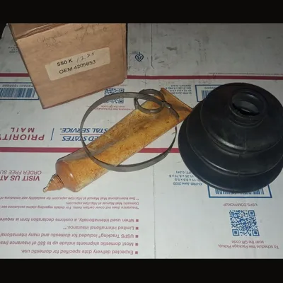
CV Joints, Boots & Parts
1978-1983 CV Joint Boot Kit 550K OEM 4205853 Dodge Omni Plymouth Horizon
550K
Fits 1978-1983 Dodge Omni · 1978-1983 Plymouth Horizon (52 listed)
$17.99
View details51 parts in Transmission & Drivetrain from Moog, Speedi-Boot and Beck/Arnley and more, each with photos, part numbers and condition on its own page. Open a part to see every vehicle it is listed for.
51 parts
Online checkout through Square. Ships from Carbondale, PA, or pick up by confirmed appointment only. Fitment question? Message us.

550K
Fits 1978-1983 Dodge Omni · 1978-1983 Plymouth Horizon (52 listed)
$17.99
View details
X9431
Fits 1978-1983 Dodge Omni · 1978-1983 Plymouth Horizon (52 listed)
$25.99
View details
9451
Fits 1980-1985 Buick Skylark · 1980-1983 Chevrolet Citation (228 listed)
$25.99
View details
CV5405
Fits 1985-1994 Chevrolet S10 Blazer · 1985-1996 GMC Jimmy (536 listed)
$17.99
View details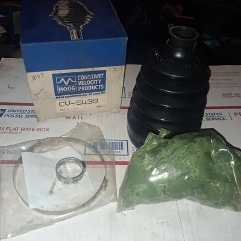
CV5439
Fits 1985-1999 Buick Century · 1985-1990 Buick Electra (456 listed)
$21.99
View details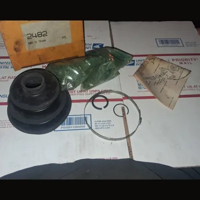
2482
Fits 1988-1997 Oldsmobile Cutlass Supreme · 1990-1992 Oldsmobile Toronado (106 listed)
$25.99
View details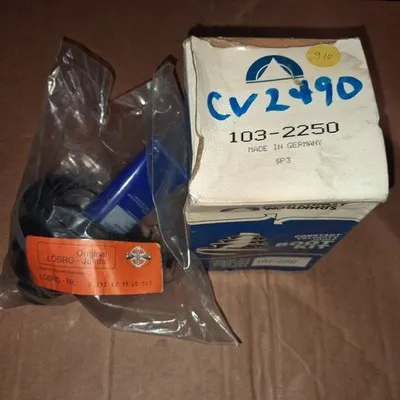
103-2250
Fits 1995-2002 Volkswagen Cabrio · 1990-1994 Volkswagen Corrado (176 listed)
$24.99
View details
103-2263
Interchange 1032263
$19.99
View details
103-2285
Fits 1983-1987 Renault Alliance · 1984-1986 Renault Encore (140 listed)
$19.99
View details
103-2461
Fits 1986-1990 Acura Legend (29 listed)
$18.99
View details
85-0920
Interchange 66-1271
$14.99
View details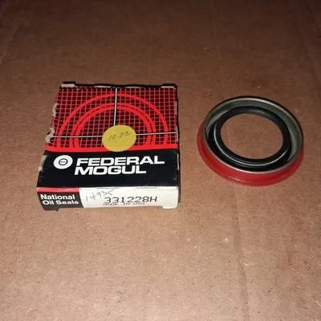
331228H
Fits 1984-2007 Dodge Caravan · 1987-2010 Dodge Dakota (1255 listed)
$14.99
View details
TOS 18663
Fits 1987-1993 Chevrolet Suburban · 1992-1994 GMC Yukon (17 listed)
$18.99
View details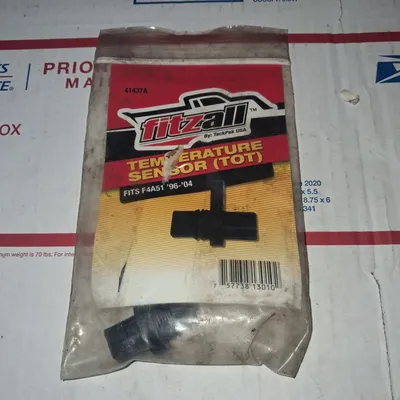
41437A
Fits F4A51 1996-2004
$12.99
View details
CV2457
Fits 1979-1985 Buick Riviera · 1979-1985 Cadillac Eldorado (173 listed)
$29.99
View details
CV2460
Fits 1982-1984 Chevrolet Cavalier (50 listed)
$19.99
View details
CV2470
Fits 1974-1981 Volkswagen Dasher · 1987-1993 Volkswagen Fox (405 listed)
$19.99
View details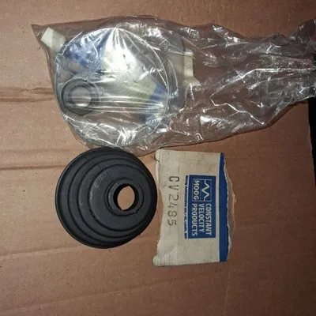
CV2485
Fits 1989-1994 Audi 100 · 1972-1977 Audi 100 Series (341 listed)
$24.99
View details
CV4405
Fits 1986-1989 Honda Accord · 1986-1996 Acura Integra (98 listed)
$19.99
View details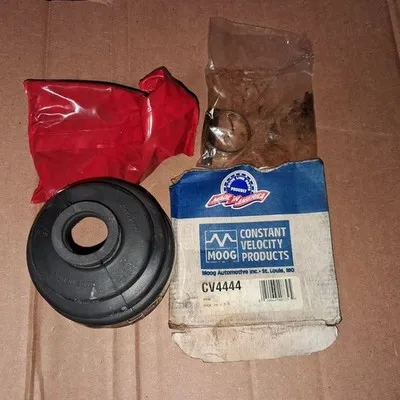
CV4444
Fits Subaru GL · Subaru Loyale (81 listed)
$24.99
View details
CV4488
Fits 1986-1989 Acura Integra · 1988-1995 Acura Legend (161 listed)
$19.99
View details
CV5443
Fits 1985 Buick Riviera · 1985 Cadillac Eldorado (14 listed)
$34.99
View details
CV5450
Fits 1985-2002 Chevrolet Cavalier (244 listed)
$29.99
View details
CV5463
Fits 1985-2005 Buick Century · 2005-2007 Buick Allure (2793 listed)
$19.99
View details
CV5865
Fits 1985-1988 Chevrolet Spectrum · 1989 Geo Spectrum (54 listed)
$22.99
View details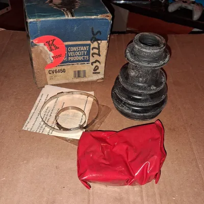
CV6450
Fits 1983-1987 Renault Alliance · 1984-1986 Renault Encore (134 listed)
$19.99
View details
CV7400
Fits 1991-1994 Dodge Caravan (57 listed)
$29.99
View details
CV7406
Fits 1988-1990 Chrysler Daytona · 1988-1990 Chrysler Dynasty (601 listed)
$19.99
View details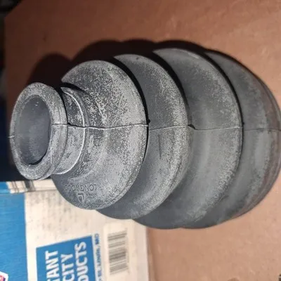
CV7441
Fits 1996-2007 Dodge Caravan · 1996-2000 Plymouth Voyager (186 listed)
$22.99
View details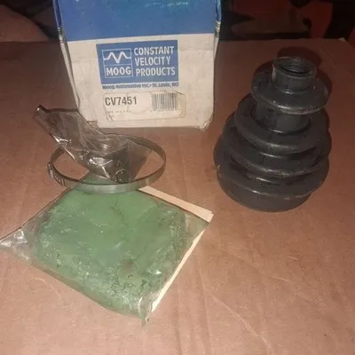
CV7451
Fits 1993-1994 Ford Taurus · 1993-1994 Ford Tempo (60 listed)
$20.39
View details
CV8415
Fits 1989-1992 Ford Probe · 1988-1992 Mazda 626 (41 listed)
$19.99
View details
CV8448
Fits 1986-1994 Ford Taurus · 1986-1994 Mercury Sable (278 listed)
$24.99
View details
CV2460SB
Interchange 66-1091
$24.99
View details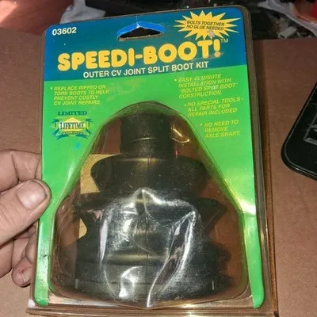
03602
Interchange Speedi-Boot 03602
$28.99
View details
03603
Interchange Speedi-Boot 03603
$28.99
View details
03611
Fits 1979-1981 Datsun 310 · 1976-1978 Datsun F10 (44 listed)
$29.99
View details
223535
Fits 1989-1991 Chevrolet Sprint · 2003-2009 Chrysler PT Cruiser (210 listed)
$14.99
View details
3459
Fits 2007-2009 Chrysler Aspen · 1984-1993 Chrysler Daytona (535 listed)
$9.99
View details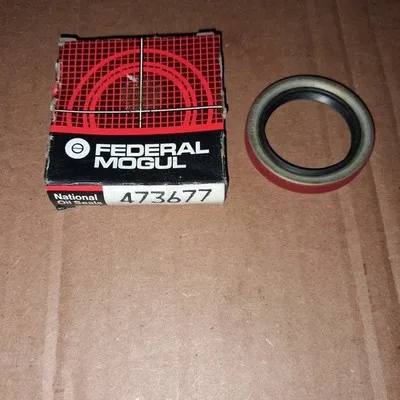
473677
Fits 2003-2010 Honda Civic · 1985-1992 BMW 735i (45 listed)
$9.99
View details
Fits 1999-2000 Cadillac Escalade · 1993-1999 Chevrolet C1500 (1547 listed)
$34.99
View details
66-1191
Fits 1988-1991 Honda CRX · 1988-1997 Honda Civic (401 listed)
$24.99
View details
66-1372
Interchange Dana 66-1372
$24.99
View details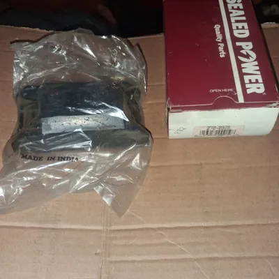
270-2378
Fits 1973-1974 Buick Apollo · 1967-1972 Buick Electra (495 listed)
$19.99
View details
03600
Fits 1980 Audi 4000 (4 listed)
$22.99
View details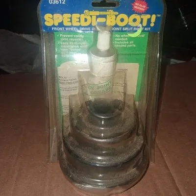
03612
Fits 1982-1985 Nissan Sentra (47 listed)
$16.99
View details
03615
Fits 1980 Audi 4000 · 1980-1985 Volkswagen Jetta (145 listed)
$16.99
View details
Motormite 03605
Fits 1983-1986 Chrysler LeBaron · 1983-1986 Chrysler New Yorker (175 listed)
$29.99
View details
Motormite 03608
Fits 1976-1985 Honda Accord · 1973-1985 Honda Civic (203 listed)
$29.99
View details
TM-36
Fits 1975-1976 Ford Bronco · 1972 Ford Custom (20 listed)
$63.87
View details
22335
Fits 1985-1993 Buick Century · 1985-1995 Buick Skylark (1028 listed)
$24.99
View details
9017F
Fits 1968 Ford
$44.99
View details